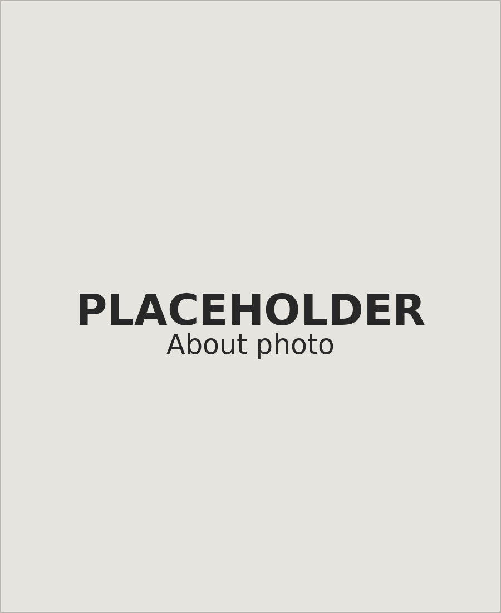

About Me

Hello! I'm Gülce Besen Dilek, a director, animator, illustrator and concept artist based in Germany.
Some of you may have come across my short animated film KOLAJ, which was fortunate to be nominated for the German Short Film Award and the Annie Awards in 2024, and received a few other recognitions along the way. Over the years, I've worked on a variety of projects, including animated films, comics, children's books, and VR games. I'm currently available for freelance work and excited to collaborate on new projects!
Beyond client work, I direct my own animated films, including FORBIDDEN T-SHIRT (2018) and MAKE UP YOUR MIND (2019). Right now, I'm developing my next project.
Background & Education
Originally from Istanbul, I moved to Austria at fifteen to attend high school. Before that, I received a scholarship to take a graphic novel course at Bilgi University in Istanbul, where I was introduced to visual storytelling. Later, I decided to dive deeper into the world of storytelling and continued my journey by studying Animation at the Filmakademie Baden-Württemberg's Animationsinstitut.
After graduating, I had the incredible opportunity to further my education through the Animation Sans Frontières scholarship, attending renowned institutions such as Gobelins, MOME, and The Animation Workshop in Viborg.
CV
My Approach
As an art director, I prioritize creating a distinct visual identity for the story, ensuring the visuals are unique and highlight the project's essence.
With every story told and every visual style explored, designing something that feels entirely new has become a real challenge. My focus, however, is on ensuring a unique marriage of content and style that feels both fresh and harmonious.
In the projects I've worked on, particularly in games and animated films, I've often found that the visual style can significantly influence the development of the story. Based on the designs, new story directions can begin to emerge. This is why I believe that being both a writer and director on my own projects gives me a distinct advantage in my visual work. Feedback meetings often evolve into collaborative brainstorming sessions, sparking mutual inspiration and creative insights.
Contact Me
Gülce Besen Dilek
Ludwigsburg / Germany
E-mail: gbesendilek@gmail.com
Let's connect!